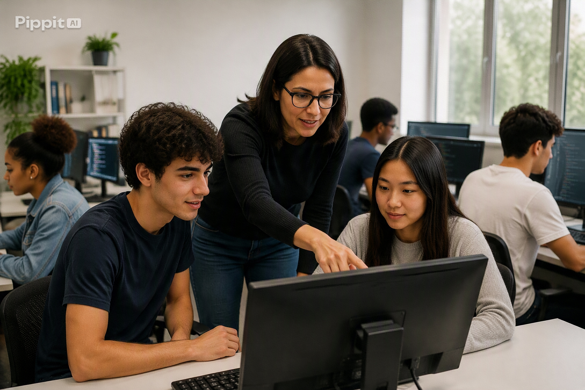

🚀 Futuro Profissional
Projeto voltado para capacitação profissional, oferecendo cursos e treinamentos para desenvolvimento de habilidades técnicas e comportamentais.
Saiba maisO Instituto Conecta Futuro desenvolve projetos voltados para educação, inclusão digital, capacitação profissional e desenvolvimento social.
Nossas iniciativas buscam aproximar pessoas da tecnologia e contribuir para a construção de novas oportunidades.
Projeto voltado para inclusão digital, oferecendo aulas de informática e conhecimentos básicos sobre tecnologia.
Saiba mais
Projeto voltado para capacitação profissional, oferecendo cursos e treinamentos para desenvolvimento de habilidades técnicas e comportamentais.
Saiba mais
Projeto voltado para o desenvolvimento educacional, oferecendo atividades e recursos para alunos de diferentes contextos sociais.
Saiba mais
Ações comunitárias que promovem o acesso à tecnologia e ao conhecimento para pessoas de diferentes faixas etárias.
Saiba maisVocê pode contribuir como voluntário, parceiro ou apoiador.
Seja Voluntário